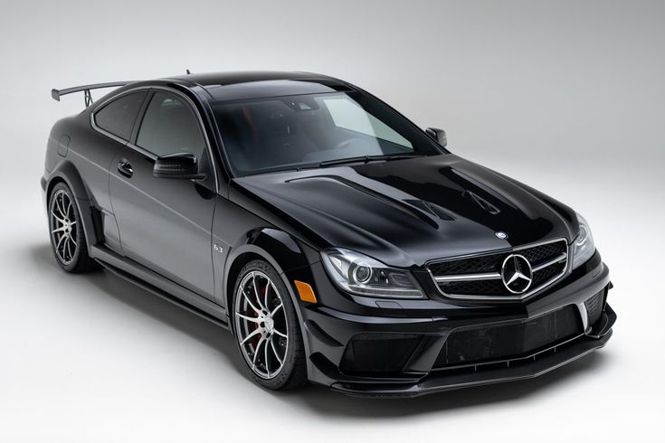
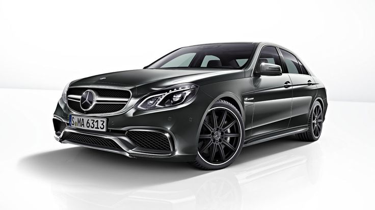
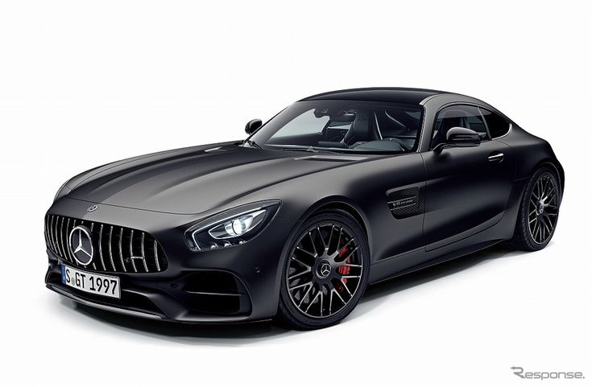
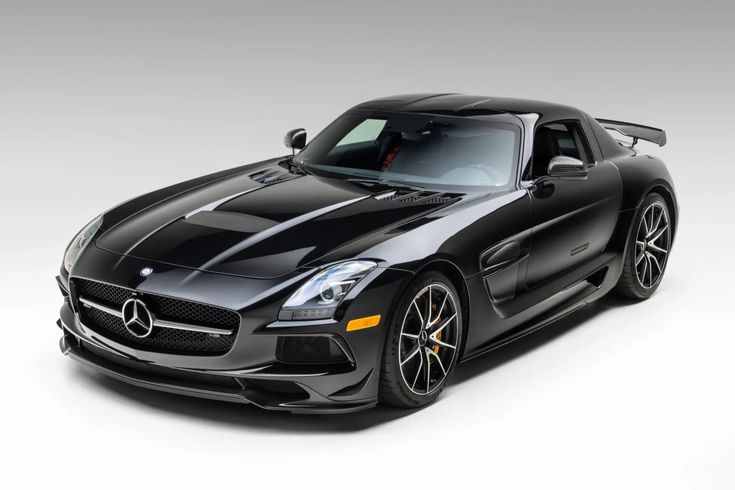
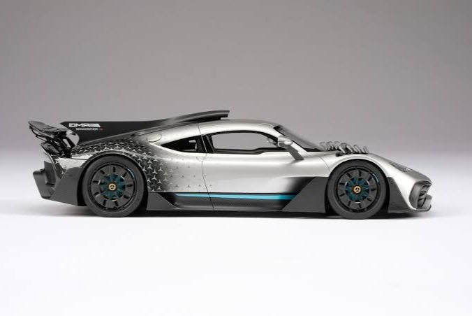
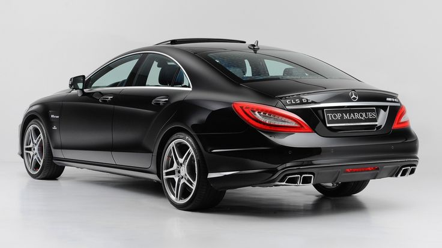

La gamme AMG
C'est quoi AMG — une division sportive de Mercedes créée en 1967
AMG = Aufrecht, Melcher et Großaspach (les fondateurs)
Au départ c'était un atelier indépendant qui préparait des moteurs Mercedes
En 1999 Mercedes rachète AMG et en fait sa division sportive officielle
AMG prépare des moteurs ultra performants
Chaque moteur AMG est assemblé à la main par un seul technicien
La signature du technicien est gravée sur le moteur — c'est la philosophie "One Man One Engine"
Les modèles AMG les plus connus

C63 AMG
Audio — Son du moteur

E63 AMG
Audio — Son du moteur

GT AMG
Audio — Son du moteur

SLS AMG
Audio — Son du moteur

AMG ONE
Audio — Son du moteur

CLS63 AMG